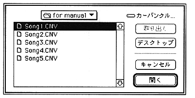

Now insert the compressed file name into the collect list. Click where you want to insert in the collect list, and then select the compressed file name. The compressed file name selected here is inserted immediately before the compressed file name selected in the collect list.
Exec
Combines all the compressed files specified in the collect list and outputs one sequence bank data. You can specify any name for the output file.